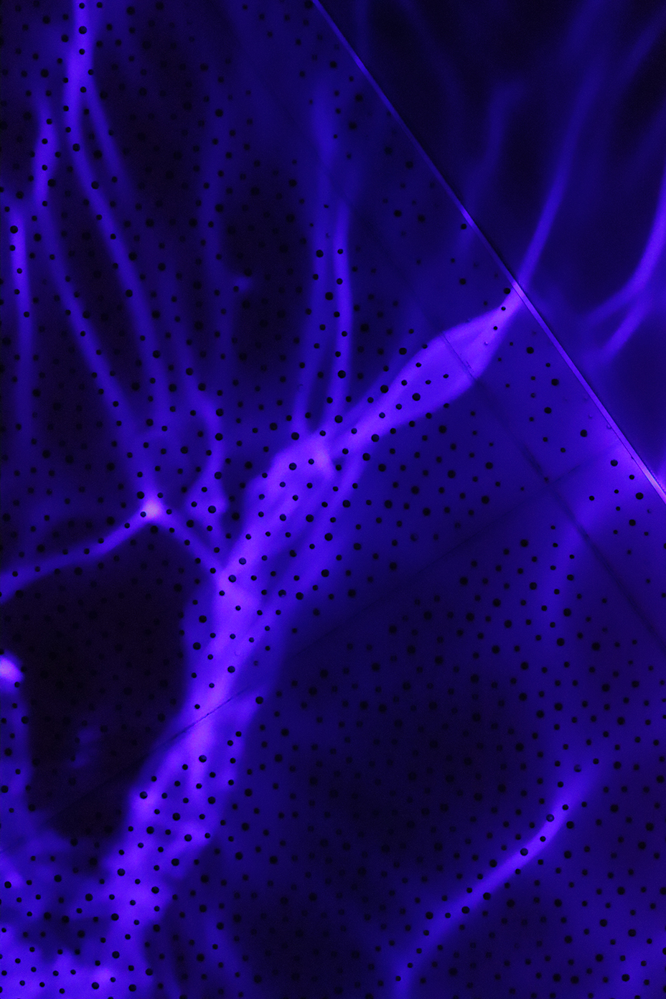
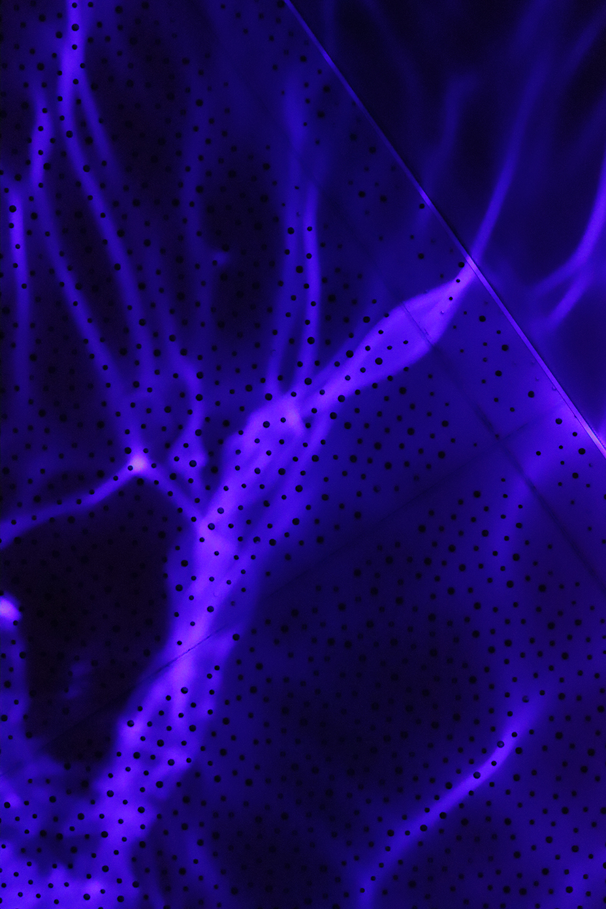
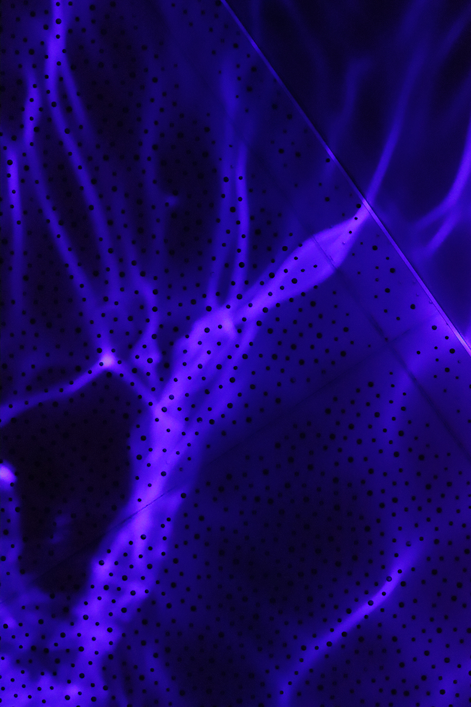
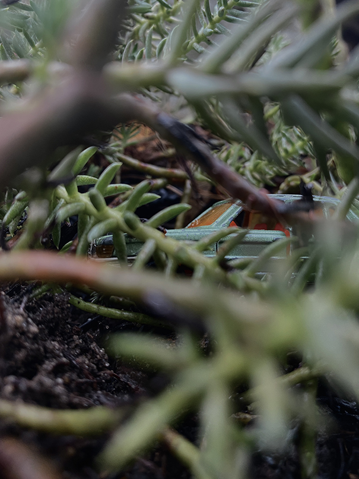
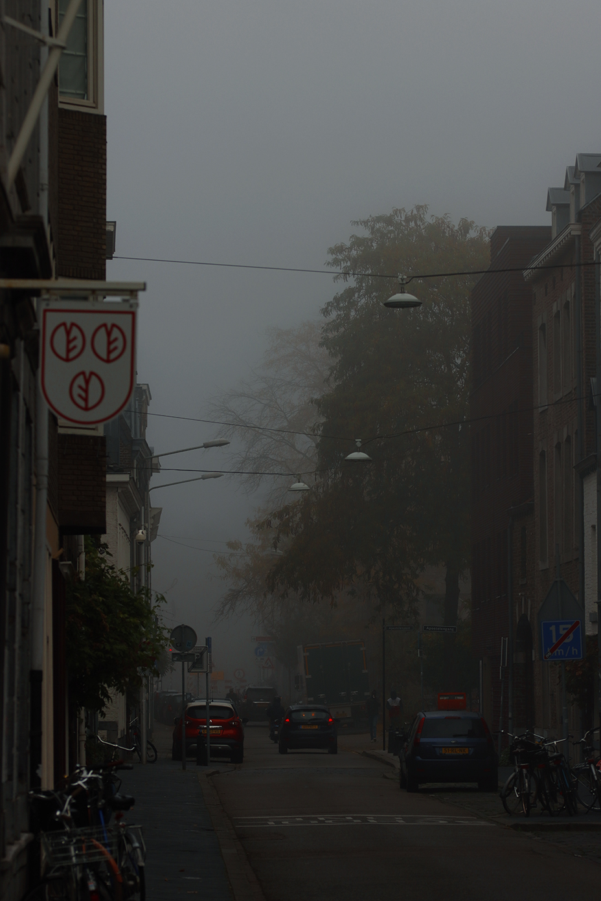

×


 


In a group we were assigned to create a 'playful' work with conditions or rules. We decided to take humans' natural curiosity and playfulness as our game element. We wanted to make the work interactive but didn't want it to feel like an activity in a children's museum. We were looking to create an experience. After converting an old drawer into a see-through box, we made a layer of water and shone lights through it. The board is made of plexiglass and is flexible so the viewer can play with the water and its reflection. We turned this interactive installation into a performance, and I made a separate video work about it. You can find that video on the video page under the name 'otherworld'.
×


During a writing exercise I had collected fourteen words on the theme of power. For two minutes I wrote about each of these words. By end of the two minutes, you had to write down the next word immediately. This created unlikley and unexpected changes to the sentences. On the finished text you applied the technique of erasure poetry. By leaving some parts out or highlighting other parts, you create a new text with a different meaning. After that experimentation began with the ways you could visualise this text. I soon got the association with punch cards: what is omitted contains the information. When I retyped the text into Word the grammatic or spelling mistakes started to surface. I kept these 'notifications' in my final work.
×


For an assignment, we had to bury an object for a month. I had been saving vitamin capsules for a while and seemed perfect for this occasion. These capsules dissolve when in contact with water. I filled these capsules with different nutrients like pesto, pasta, salt, sugar, and rice. After a month, I dug up the remains of these capsules and examined which capsule had contained which substance. The pesto had become mouldy, the honey had crystallised, and glycerine had made the capsule tougher. I named this project 'Time capsule'.
×


Tijdens mijn wandelingen naar school kom ik langs huis nummer 59. Vanuit buiten ziet het eruit alsof dit huis maar een deur breed is. De twee panden naast deze deur zijn van een andere tijd en in een andere stijl gebouwd. In wat ooit een kleine zijstraat geweest moet zijn, staat nu dit huis. Dit beeld riep bij mij allerlei verhalen op. Een magische deur naar een andere wereld, maar ook ging ik praktisch nadenken over hoe je een huis van 1 meter breed zou inrichten. Tiny house op een heel andere niveau. Welke slimme opberg trucjes zou je gebruiken? Waar is de trap omhoog? Ik heb kleine illustraties gemaakt van dit huis in verschillende scenario's. Dit inspireerde mij om een kort gedicht te schrijven. Ik presenteerde dit werk met de twee geschilderde illustraties en het gedicht.
On my walks to school, I pass house number 59. From outside, it looks like the house is only one door wide. The two properties next to this door are of a different era and built in a different style. In what once must have been a small side street now stands this house. This image evoked all kinds of stories in my mind. A magical door to another world, but it also made me think practically about how you would decorate a 1-metre-wide house. Tiny house living on a whole other level. What clever storage tricks would you use? How would the stairs work? I made little illustrations of this house in different scenarios. This inspired me to write a short poem. I presented this work with the two painted illustrations and the poem.
×


Together with my classmates, we put together an exhibition "Als gegoten" (as cast). For this exhibition, I had created several intertwined works. On the ground I had placed 360 ceramic walnuts that I cast with a self-made mould. With this mould all the walnuts were identical. I found the sound of the hollow walnuts when they broke so intriguing that I decided to performatively walk over them. In addition, I had made a series of photographs measuring 90 by 130 centimetres. This was my first time really using photography as a medium for my classes. Finally, I had a video played on three different speeds and screens.
×



What is my utopia? That is the question that started this assignment. I am fascinated by abandoned and rundown buildings and areas. Places where the traces of man can still be seen, but it is no longer used. Sometimes nature takes over like Chernobyl, but also places like Pompei attract my attention. Disaster struck and no people remained. Most people would rather call that a dystopia then a utopia but for me they seem to be one and the same. I decided to create my own abandoned world. I played with the concept of enlarging and narrowing perspective and created an installation to take you to this otherworld and give you a new 'frame'. To experience the installation, you must step inside a black frame on the ground, put on headphones and look through the tube. The viewer will hear an audio clip I made from environmental sounds and look at the four dystopian photographs.
×



Outside of a regular assignment, I also make my own photographic work. Most of the time I’m inspired by things around me. I’m interested in the history of photography as a journalistic and art medium and they’re relation to painting as a medium. Photography is still fairly new in the art world and has only recently gained a place in museums. Many of the photographers who inspire me have thus started out as journalists. Unlike paintings, photography always depicts something in the real world. I have found that often the viewer wants to get this ‘right’. But sometimes the very mystery of what you are seeing, is what makes the work intriguing. I like to experiment with this discrepancy and study how people interact with photography compared to paintings.
×


For the subject spatial, we were made a hypothetical design for an (art) intervention near the bridge over the A2 to Maastricht. In the Netherlands, there are many places where art is put next to a motorway or on a roundabout. Within the artworld this has caused a debate what the function or artistic need is behind this roundabout-art. This assignment got me thinking about what aspects a work can have: the visual, the story, the meaning, etc. How do you make sure you attract the attention of the audience and add meaning to the surroundings? I experimented with the shape of the bridge that crosses the motorway and did some research on the longer route this bridge is part of: De Groene Loper (the green walkway). This is a project by the Maastricht to create more nature and cycle/walking paths through Maastricht. The motorway has gone underground in the city centre and now there is a wide footpath with trees surrounding it. For a route called the green walkway, I didn't think the surrounding areas were very green at all. So, I took the empty piece of land next to this path and designed a hilly landscape in the shape of the bridge and the full path with flowers.
×